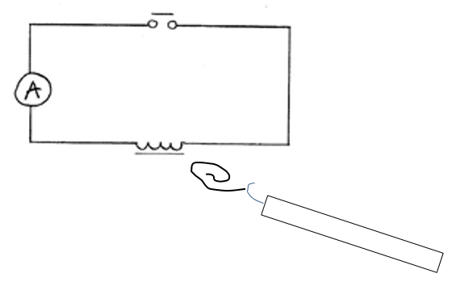

Aufgabe: Untersuche systematisch, wie die Stärke eines Elektromagneten von Stromstärke I,
Windungszahl N und Spulenkern abhängt. Bestimme die Magnetstärke jeweils über die
Abrisskraft der Büroklammer.
Anleitung
- 1. Büroklammer an den Federkraftmesser hängen und an den Elektromagneten anlegen.
- 2. Federkraftmesser langsam abziehen und im Moment des Abreißens die Kraft ablesen. (→ Je größer die Kraft beim Abreißen der Büroklammer, desto stärker ist der Elektromagnet.)
- 3. Nur eine Größe verändern, alle anderen Bedingungen konstant halten.
- 4. Die Magnetstärke jeweils qualitativ oder als Kraftwert eintragen.
Material
- Spule (bis 3000 Windungen)
- Amperemeter
- Büroklammer
- Federkraftmesser
- I-förmiger und U-förmiger Eisenkern
Versuchsaufbau

B
Durchführung und Messung
1) Abhängigkeit von der Stromstärke N = 3000, U-Kern
2) Abhängigkeit von der Windungszahl I = ____ mA, U-Kern
3) Abhängigkeit vom Kern I = ____ mA, N = 3000
Zusatz
Überprüfe die Ergebnisse qualitativ mit dem Magnetfeldsensor und der MeasureApp.